C - The Twenty Six Quads
The Quads — Overview
Universal Planetary Quadrangle Mapping System
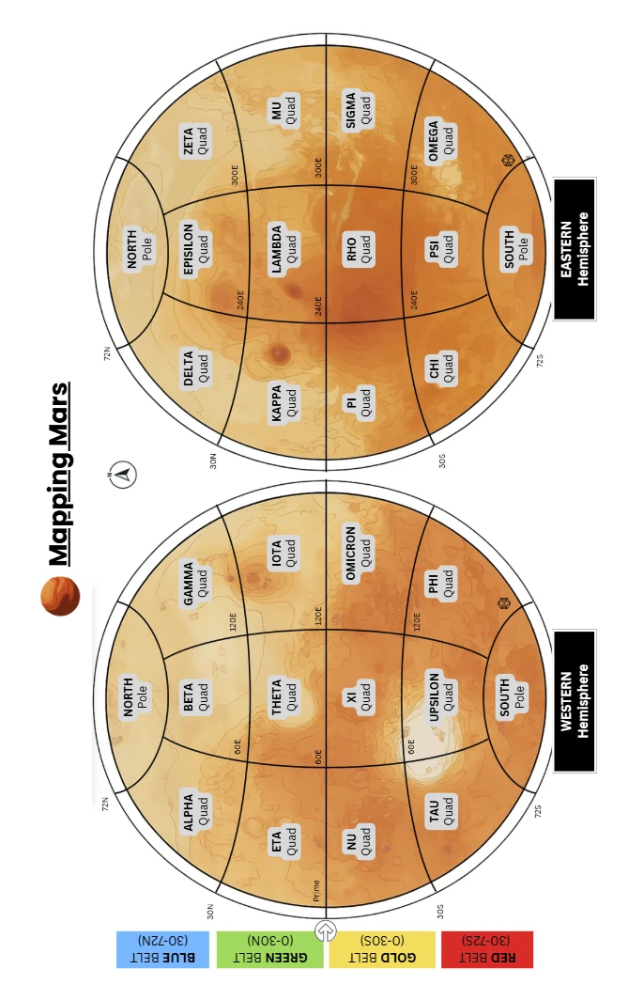
Summary: Introduced to unify quadrangle systems across planetary sized bodies (spherical).
- Definition: Large continental-scale operational units composed of multiple Zands, and aligned to unified Zones and Bands definition approach (i.e. Quads align with zones and bands).
- Standard: 26 Quads per planet: 24 equatorial/mid-latitude Quads (6 per belt × 4 belts) and 2 polar Quads (North, South).
- Usage: Serve as the largest named reference divisions, analogous to legacy quadrangles but globally standardised across bodies.
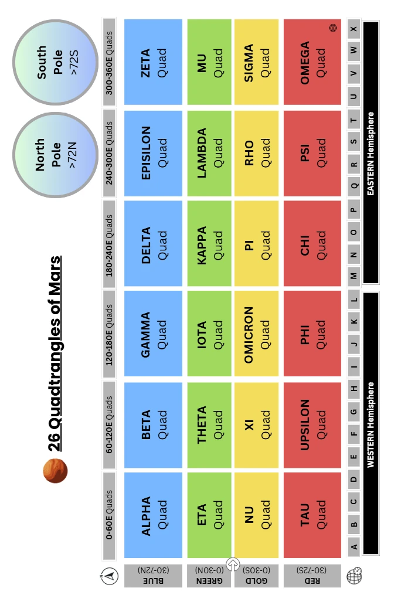
Quad Table (ZBS / MGrid, boundary at 30°)
Name | Greek | Hemisphere | Latitude span | Longitude span | Area (km²) | Height (km) | Avg width (km) |
|---|---|---|---|---|---|---|---|
North | N | North Polar | 72°N → 90°N | All longitudes | 3,533,019 | 1,064.84 | 3,317.88 |
South | S | South Polar | 72°S → 90°S | All longitudes | 3,533,019 | 1,064.84 | 3,317.88 |
Alpha | α | North Mid | 30°N–72°N | 0–60° | 5,426,638 | 2,484.63 | 2,184.08 |
Beta | β | North Mid | 30°N–72°N | 60–120° | 5,426,638 | 2,484.63 | 2,184.08 |
Gamma | γ | North Mid | 30°N–72°N | 120–180° | 5,426,638 | 2,484.63 | 2,184.08 |
Delta | δ | North Mid | 30°N–72°N | 180–240° | 5,426,638 | 2,484.63 | 2,184.08 |
Epsilon | ε | North Mid | 30°N–72°N | 240–300° | 5,426,638 | 2,484.63 | 2,184.08 |
Zeta | ζ | North Mid | 30°N–72°N | 300–360° | 5,426,638 | 2,484.63 | 2,184.08 |
Eta | η | North Low | 0–30°N | 0–60° | 6,015,475 | 1,774.74 | 3,389.50 |
Theta | θ | North Low | 0–30°N | 60–120° | 6,015,475 | 1,774.74 | 3,389.50 |
Iota | ι | North Low | 0–30°N | 120–180° | 6,015,475 | 1,774.74 | 3,389.50 |
Kappa | κ | North Low | 0–30°N | 180–240° | 6,015,475 | 1,774.74 | 3,389.50 |
Lambda | λ | North Low | 0–30°N | 240–300° | 6,015,475 | 1,774.74 | 3,389.50 |
Mu | μ | North Low | 0–30°N | 300–360° | 6,015,475 | 1,774.74 | 3,389.50 |
Nu | ν | South Low | 0–30°S | 0–60° | 6,015,475 | 1,774.74 | 3,389.50 |
Xi | ξ | South Low | 0–30°S | 60–120° | 6,015,475 | 1,774.74 | 3,389.50 |
Omicron | ο | South Low | 0–30°S | 120–180° | 6,015,475 | 1,774.74 | 3,389.50 |
Pi | π | South Low | 0–30°S | 180–240° | 6,015,475 | 1,774.74 | 3,389.50 |
Rho | ρ | South Low | 0–30°S | 240–300° | 6,015,475 | 1,774.74 | 3,389.50 |
Sigma | σ | South Low | 0–30°S | 300–360° | 6,015,475 | 1,774.74 | 3,389.50 |
Tau | τ | South Mid | 30°S–72°S | 0–60° | 5,426,638 | 2,484.63 | 2,184.08 |
Upsilon | υ | South Mid | 30°S–72°S | 60–120° | 5,426,638 | 2,484.63 | 2,184.08 |
Phi | φ | South Mid | 30°S–72°S | 120–180° | 5,426,638 | 2,484.63 | 2,184.08 |
Chi | χ | South Mid | 30°S–72°S | 180–240° | 5,426,638 | 2,484.63 | 2,184.08 |
Psi | ψ | South Mid | 30°S–72°S | 240–300° | 5,426,638 | 2,484.63 | 2,184.08 |
Omega | ω | South Mid | 30°S–72°S | 300–360° | 5,426,638 | 2,484.63 | 2,184.08 |
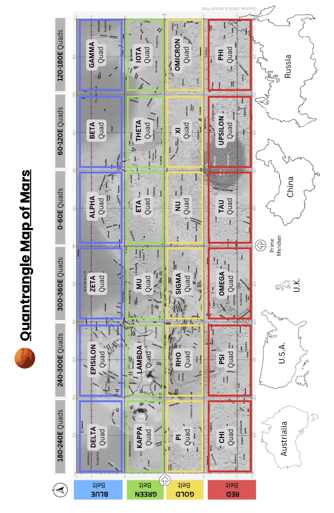
Notes
- Quad table with the belt boundary at 30°, polar caps at ±72°, and R = 3,389.5 km.
- Area method: spherical band/cap; a 60°‑wide Quad is 1/6 of the full‑longitude band. Height = meridional arc; Avg width = Area ÷ Height.)
- Per polar cap (≥ 72°): 3,533,019 km²; height 1,064.84 km; average “width” ≈ 3,317.88 km.
- Per 60° low‑latitude Quad (0–30°): 6,015,475 km²; height 1,774.74 km; avg width 3,389.50 km.
- Per 60° mid‑latitude Quad (30–72°): 5,426,638 km²; height 2,484.63 km; avg width 2,184.08 km.
- Totals:
- 12 low‑lat Quads × 6.015 M = 72.19 M km²
- 12 mid‑lat Quads × 5.427 M = 65.12 M km²
- 2 polar Quads × 3.533 M = 7.07 M km²
- Grand total ≈ 144.37 M km² (matches 4πR24\pi R^24πR2 with R = 3,389.5 km).
Why 0°-30°-72°@6° Structuring of Quads
- Adopted 0°–30°–72° @ 6° to create a clean, planetwide grid with six 60°-longitude quads per band.
- Delivers 24 sub-polar bands (12 per hemisphere), neatly aligning with our 24-zone framework.
- Low-latitude quads = 5 bands tall; mid-latitude quads = 7 bands tall—this pairing yields similar-sized sub-polar quads for easier comparison and planning.
- Adds finer zoneband granularity in 30–48°, the expected initial settlement belt (three stacked bands).
- Keeps the 30–48° region within a single 60° quad, avoiding cross-quad fragmentation.
- Produces compact, well-proportioned polar caps (72–90°) without distorting mid-lat shapes.
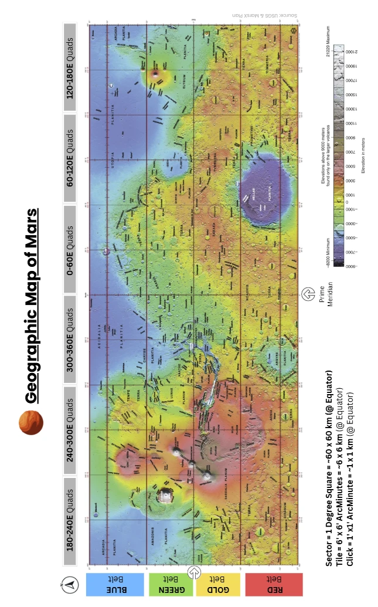
Key Benefits of the Universal Quads & Zones-Bands vs Multiple Legacy Schemas
- Cross-Planet Compatibility: One coding framework applies to all spherical or near-spherical bodies: planets, moons, dwarf planets, large asteroids. Eliminates body-specific quadrangle schemes.
- Consistent Quad Counts Across All Planets: Every planetary body is divided into 26 Quads, regardless of size. Simplifies multi-world navigation and cataloguing of the largest divisional unit.
- Integration with Timekeeping: 24 longitudinal Zones correspond directly to planetary time zones. Enables direct coordination between geospatial codes and planetary calendars or shift systems. All sub-polar quads span 4 time-zones.
- Scalability: Quads = continental administrative units. Zands (zone × band) = mid-scale, near-equal area blocks. Supports both fine-grained science (Zand codes) and coarse governance (Quad codes).
- Alignment: The longitudinal boundaries of the mid and lower latitude quadrangles align so the adjacent boundaries are simpler.
- Similar Areas in Sub-Polar Regions: All sub-polar quads are within ~10% of each others area.
- Standardised 6° Latitude Bands: Uniform divisions enable clean nesting: Quads → Zands → Provinces → Sectors → Tiles → Clicks. Avoids arbitrary or politically influenced latitude lines.
- Flexible Numbering: Quads are numbered systematically: 01 = North Polar, 02–13 = northern belts, 14–25 = southern belts, 26 = South Polar. Zands can be encoded compactly as [Zone][Band]. Codes can be paired with cultural or settlement names without breaking reference integrity. Or in case of Mars a simple Greek alphabet scheme can be adopted.
- Historical Neutrality: Not tied to any one space agency’s cartography. Provides a politically neutral “tabula rasa” for planetary mapping and settlement.
Planetary Legacy Quadrangle Mapping Systems
Quadrangle mapping divides planetary surfaces into manageable, rectangular sections for detailed cartographic and geological work. Despite the spherical nature of these bodies, quadrangle schemes vary depending on mapping history, mission needs, and surface coverage rather than planet geometry.
Moon (Lunar Quadrangles)
- Number of Quadrangles: 30 quadrangles at 1:2,500,000 scale (144 at 1:1,000,000 scale)
- Naming/Numbering: Labeled LQ01–LQ30 (large-scale), arranged from north to south; higher-resolution uses LAC series, with names based on prominent features
- Lat–Lon Boundaries: Large scale: Bands like 65°–90° N (pole), then 30° increments in latitude. Fine scale: 12 latitude bands; longitude divisions vary with latitude
- Logic: Early photographic mosaics and variable-size features required varying density; polar zones require fewer quadrangles due to longitude convergence.
Mercury (Hermes Quadrangles)
- Number of Quadrangles: 15 quadrangles (H‑1 to H‑15)
- Naming/Numbering: “H” stands for Hermes; named after craters or albedo features—originally based on remote telescopic data, updated post-MESSENGER
- Lat–Lon Boundaries: Each covers 22° latitude bands: ±21° around equator, mid-latitude sectors up to ±66°, and one polar cap each. Longitude typically spans 90°, except equatorial zones.
- Logic: Tailored to match mission imagery—reflects data availability and regional feature visibility.
Mars (MC Quadrangles)
- Number of Quadrangles: 30 (MC‑01 to MC‑30)
- Naming/Numbering: MC = Mars Chart; named after classical albedo/geographic features (e.g., Mare Boreum, Tharsis)
- Lat–Lon Boundaries: 16 equatorial quads: 0–30° latitude × 45° longitude. 12 mid-latitude quads: 30–65° latitude × 60° longitude. 2 polar quads: ≥65° N or ≤65° S, full 360° longitude
- Logic: Balances map size, feature resolution, and latitudinal distortions; historically rooted in manageable mapping units for geological surveys.
Venus (V-Quadrangles)
- Number of Quadrangles: 8 at 1:10,000,000 scale. (62 at 1:5,000,000 scale)
- Naming/Numbering: Designated V‑n, named for Venusian features (e.g., Ishtar Terra)
- Lat–Lon Boundaries: Broad lat bands (e.g., 0–57° N, 57–90° N) with full longitude. Finer scale slices: variable latitude bands (25° or 50°) and 30° longitude sectors.
- Logic: Reflects Venus’s thick cloud cover and the need for radar mosaics; variations accommodate distortions and feature density.
Cross-Planetary Comparison
Body | Quadrangles | Naming Prefix | Lat-Lon Logic | Motivation |
|---|---|---|---|---|
Moon | 30 / 144 | LQ / LAC | Variable lon width by latitude | Feature density, data coverage |
Mercury | 15 | H-1…H-15 | Equatorial vs polar bands | Mission image orientation |
Mars | 30 | MC-01…MC-30 | Equator, mid-latitudes, poles | Geological mapping consistency |
Venus | 8 / 62 | V-n | Large tiles, then fine gridding | Radar data resolution needs |
The Quads — North Latitudes (0°N–72°N)
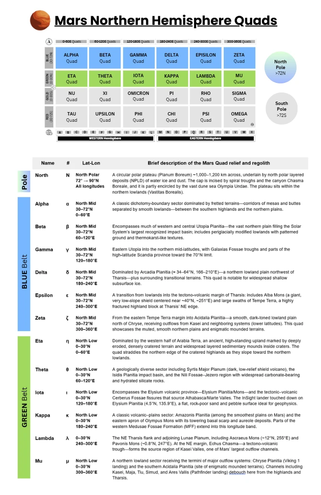
Blue Belt Quads — North Mid Latitudes (30°N–72°N)
Elevation context. The band straddles the dichotomy boundary (Alpha–Epsilon margins) and the northern lowlands (Beta–Delta–Zeta cores), with typical surface levels ~1–5 km below the areoid in the plains, rising locally over Tempe/Alba.
Climate/“weather. Expect large diurnal temperature ranges, seasonal CO₂ frost, and dust-driven variability in visibility and insolation. The deeper lowlands (e.g., Utopia/Arcadia/Acidalia) tend to have higher ambient pressure than adjacent uplands at the same latitude. (General Mars climatology; plain-lowland pressure context)
Volatiles/ground ice. Multiple lines of evidence indicate shallow ground ice or excess ice across portions of Arcadia and Utopia in this latitude band; Phoenix confirmed water ice in the high-north ground.
⬛ Alpha (30–72°N 0–60°E)
Profile. A classic dichotomy-boundary sector dominated by fretted terrains—corridors of mesas and buttes separated by smooth lowlands—between the southern highlands and the northern plains. Major provinces include Deuteronilus Mensae (~44°N, 27°E) and Protonilus Mensae (~44°N, 45–50°E).
- Relief & elevation. Transitional topography stepping down from cratered uplands to the lowlands; fretted scarps typically ~1–2 km high.
- Geology & landforms. Extensive fretted terrain with lobate debris aprons, rock-glacier–like flows, lineated valley fill, and dissected plateaus (hallmarks of cold-climate modification).
- Surface texture. Mantled slopes, polygonized ground in places, aprons with flow lineations; smooth lowlands juxtaposed with steep-walled troughs.
- Weather/temperature tendencies. Mid-latitude regime with strong diurnal ranges and seasonal CO₂ frost; local katabatic/upslope winds along scarps can focus dust/sand transport. (General mid-latitude behavior)
- Notable observations. Numerous HiRISE/THEMIS campaigns document glacial/periglacial morphologies and active mass-wasting along the mensae.
⬛ Beta (30–72°N 60–120°E)
Profile. Encompasses much of western and central Utopia Planitia—the vast northern plain filling the Solar System’s largest recognized impact basin; includes periglacially modified lowlands with patterned ground and thermokarst-like textures.
- Relief & elevation. Broad, low-lying plains (many areas ~4–5 km below datum) with subdued cratering and wrinkle ridges. (Vastitas-style lowland context)
- Geology & landforms. Smooth plains with periglacial indicators (scalloped depressions, polygonal ground, possible ice-rich mantles); locally, pedestal and thermokarst-like craters.
- Surface texture. Dusty veneers and sand sheets interspersed with armored or indurated patches; low relief over long distances.
- Weather/temperature tendencies. Large daily thermal swings moderated by dust loading; seasonal pressure changes are noticeable in this elevation range.
- Notable observations. Viking 2 landed in Utopia Planitia (46.7°N, 117.5°E); Zhurong also landed on the basin’s southern margin (both in the wider Utopia region).
⬛ Gamma (30–72°N 120–180°E)
Profile. Eastern Utopia into the northern mid-latitudes, with Galaxias Fossae troughs and parts of the high-latitude Scandia province toward the 70°N limit.
- Relief & elevation. Lowland plains punctuated by graben/fossae (e.g., Galaxias Fossae centered near ~36–39°N, ~218°E), plus scattered volcanic/sedimentary constructs.
- Geology & landforms. Tectonic troughs, channels, and flow features along the Utopia margin; toward high latitudes, Scandia Cavi/Tholi fields (pitted, collapse/volcanic constructs) approach the polar dune seas.
- Surface texture. Mixed smooth plains and fractured/graben terrain; localized dune patches.
- Weather/temperature tendencies. Similar mid-latitude swings; proximity to high-latitude dune fields hints at frequent dust/sand mobilization episodes.
- Notable observations. Viking 2’s site (48°N, 225°W ≡ 135°E) lies in this longitude sector of Utopia. (Landing context)
⬛ Delta (30–72°N 180–240°E)
Profile. Dominated by Arcadia Planitia (≈ 34–64°N, 166–210°E) — a northern lowland plain northwest of Tharsis — plus surrounding transitional terrains. This quad is notable for widespread shallow subsurface ice.
- Relief & elevation. Broad plains mostly ~2–4+ km below datum; very low regional slopes. (Lowland context)
- Geology & landforms. Radar and crater-terrace studies show excess ice bodies ~30–80 m thick in Arcadia; expanded secondary craters and thermokarst-like features suggest volatile-rich substrates.
- Surface texture. Smooth to gently undulating plains with sand sheets, megaripples, and occasional wrinkle ridges; polygonized mantles in places.
- Weather/temperature tendencies. Strong diurnal ranges; dust events can flatten the day–night contrast; Phoenix (68.22°N, 234.25°E) documented near-surface water ice just beneath the soil.
- Notable observations. Phoenix excavated and imaged water ice at high northern latitudes within this longitude band.
⬛ Epsilon (30–72°N 240–300°E)
Profile. A transition from lowlands into the tectono-volcanic margin of Tharsis: includes Alba Mons (a giant, very low-slope shield centered near ~40°N, ~251°E) and large swaths of Tempe Terra, a highly fractured highland block at Tharsis’ NE edge.
- Relief & elevation. Alba Mons summit reaches ~6.8 km above datum with extremely low flank slopes; Tempe Terra stands higher than adjacent lowlands and is heavily faulted/grabenated.
- Geology & landforms. Alba: vast lava aprons, collapse pits, radial/annular fractures. Tempe Terra: dense arrays of normal faults, graben (Tempe Fossae), small shields, and lava flows—one of Mars’ most crustally strained regions.
- Surface texture. Rocky lava plains, tectonic lineaments, and interspersed dust/sand mantles; local dune patches on benches and in troughs.
- Weather/temperature tendencies. Elevated, rougher terrain fosters gusty afternoon winds and channeling; thermal inertia contrasts produce strong local day–night temperature variability.
- Notable observations. THEMIS/HiRISE imaging catalogs abundant faults and volcanic constructs across Tempe and the Alba flanks.
⬛ Zeta (30–72°N 300–360°E)
Profile. From the eastern Tempe Terra margin into Acidalia Planitia—a smooth, dark-toned lowland plain north of Chryse, receiving outflows from Kasei and neighboring systems (lower latitudes). This quad showcases the muted, smooth northern plains and enigmatic mounded terrains.
- Relief & elevation. Generally low-lying plains several kilometers below datum; long, gently rolling horizons typical of the northern lowlands. (Vastitas/Acidalia context)
- Geology & landforms. Acidalia Planitia: smooth plains with low crater densities, wrinkle ridges, and enigmatic mounds (proposed mud-volcano or spring mounds in parts). Eastern Tempe Terra contributes fault-bounded blocks and erosional benches near 30–40°N.
- Surface texture. Dusty to sand-mantled surfaces with broad sheets and streaks; localized dune fields in depressions; widespread low-albedo patches.
- Weather/temperature tendencies. Frequent dust hazes modulate light; large diurnal swings typical of lowlands; outflow-channel aprons (south of 30°N) grade to smoother plains here.
- Notable observations. Decades of MOLA/THEMIS/HiRISE work underpin interpretations of Acidalia’s resurfacing history and smoothness.
Green Belt Quads — North Low Latitudes (0–30°N)
Elevation context. Much of the band lies at or below the areoid in basins and plains (Isidis, Amazonis, Chryse–Acidalia), increasing ambient pressure relative to highlands; volcanic rises (Tharsis/Elysium/Olympus) punctuate this low-latitude belt.
Geodynamic themes. Shield volcanism (Tharsis, Elysium), young flood lavas (Amazonis, Athabasca), and mega-outflow channels (Kasei system to Chryse) dominate, with carbonate- and clay-bearing terrains (Nili Fossae/Jezero) recording ancient aqueous alteration.
Atmosphere–surface interplay. Large diurnal temperature ranges at low latitudes; dust activity (haze to storms) strongly modulates illumination, thermal structure, and surface visibility across the plains. (General Mars behavior consistent with cited regional datasets.)
⬛ Eta (η) (0–30°N, 0–60°E)
Profile. Dominated by the western half of Arabia Terra, an ancient, high-standing upland marked by deeply eroded, densely cratered terrain and widespread layered sedimentary mounds inside craters. The quad straddles the northern edge of the cratered highlands as they slope toward the northern lowlands.
- Relief & elevation. Broad uplands relative to the northern plains; subdued but extensive relief with crater rims, mesas, and knobs.
- Geology & landforms. Repeated layering (often meter-scale) in crater mounds; pedestal craters and erosional benches; yardang-like wind sculpture in softer units. Layer origins include dust/sediment accumulation and chemically precipitated deposits.
- Surface texture. Heavily mantled slopes, degraded craters, and patchy induration; frequent dust veneers.
- Weather/temperature tendencies. Typical low-latitude large diurnal temperature ranges; dust hazes common but highly variable seasonally. (General Mars climatology for 0–30°N.)
- Notable observations. Arabia Terra’s layered sequences are a key archive of ancient environmental cycles recorded from orbit at HiRISE resolution.
⬛ Theta (θ) (0–30°N, 60–120°E)
Profile. A geologically diverse sector including Syrtis Major Planum (dark, low-relief shield volcano), the Isidis Planitia impact basin, and the Nili Fossae–Jezero region with widespread carbonate-bearing and hydrated silicate rocks.
- Relief & elevation. Isidis is a ~1,200–1,325 km basin along the dichotomy boundary (low-lying interior ringed by uplifted rims); Syrtis Major rises slightly as a broad shield to the SW.
- Geology & landforms. Syrtis Major: basaltic shield with calderas (e.g., Nili Patera); abundant dikes/inverted relief. Isidis margin & Nili Fossae: extensional graben and Mg-carbonates (magnesite) associated with altered olivine; widespread phyllosilicates. Jezero Crater: paleo-lake basin with a deltic fan (Perseverance landing site; 18.4°N, 77.5°E) at the NW Isidis rim.
- Surface texture. Mix of smooth basin plains (Isidis) and rough, fractured terrains (Nili Fossae); aeolian bedforms are common on open plains.
- Weather/temperature tendencies. Basin floor pressures above areoid norms; dust optical depth changes rapidly with regional storms from Syrtis/Isidis corridors. (Context from MOLA/atmospheric scaling.)
- Notable observations. Perseverance’s campaign has documented deltaic stratigraphy and carbonate–olivine terrains relevant to Mars’ early aqueous history.
⬛ Iota (ι) (0–30°N, 120–180°E)
Profile. Encompasses the Elysium volcanic province—Elysium Planitia/Mons—and the tectonic–volcanic Cerberus Fossae fissures that source Athabasca/Marte Valles. The InSight lander touched down on Elysium Planitia (4.5°N, 135.9°E), a flat, rock-poor sand and pebble surface ideal for geophysics.
- Relief & elevation. Very low-slope plains broken by wrinkle ridges and young lava flow margins; Elysium Mons (~25°N, 147°E) rises to the north.
- Geology & landforms. Cerberus Fossae: youthful extensional fissures tied to marsquakes; sources for lava and outflow channels. Athabasca Valles & flood lavas: extremely young surfaces (Amazonian) with thin, extensive flood basalts draping channels; lava thicknesses commonly tens of meters.
- Surface texture. Smooth to gently hummocky lava plains with sparse rocks and few large dunes near the InSight site; local yardangs and pressure-ridge lava textures.
- Weather/temperature tendencies. Equatorial insolation with large day–night swings; regional dust storms occasionally lower light and reduce thermal contrast.
- Notable observations. InSight detected marsquakes dominantly from the Cerberus Fossae region and tied several to fresh impacts.
⬛ Kappa (κ) (0–30°N, 180–240°E)
Profile. A classic volcanic–plains sector: Amazonis Planitia (among the smoothest plains on Mars) and the eastern apron of Olympus Mons with its towering basal scarp and aureole deposits. Parts of the western Medusae Fossae Formation (MFF) extend into this longitude band.
- Relief & elevation. Low-lying, extremely smooth plains across Amazonis punctuated by wrinkle ridges and lava margins; Olympus Mons rises ~21–22 km above surrounding plains, with an escarpment locally up to ~8–10 km high.
- Geology & landforms. Young Amazonian lavas and mantles; Olympus Mons shield with lobate aureole/landslide deposits; MFF forms wind-sculpted, easily eroded deposits of probable volcanic/airfall origin.
- Surface texture. Vast, planar to gently hummocky lava plains with sparse crater populations; local lava channels/levees and megaripples where sands accumulate.
- Weather/temperature tendencies. Open lowlands yield comparatively higher ambient pressures than adjacent uplands; regional dust hazes frequent but variable. (MOLA/pressure context.)
- Notable observations. Amazonis’ youth and smoothness are well documented in regional mapping; Olympus Mons’ aureole/escarpment system remains a key case study in megaslides and volcano–substrate interactions.
⬛ Lambda (λ) (0–30°N, 240–300°E)
Profile. The NE Tharsis flank and adjoining Lunae Planum, including Ascraeus Mons (~12°N, 255°E) and Pavonis Mons (~0.8°N, 247°E). At the NE margin, Echus Chasma—a tectono-volcanic trough—forms the source region of Kasei Valles, one of Mars’ largest outflow channels.
- Relief & elevation. High volcanic rises transition eastward to lava-mantled plateaus (Lunae Planum), then break into troughs and channel heads; cliffs at Echus can reach ~4 km.
- Geology & landforms. Tharsis Montes (Ascraeus/Pavonis): enormous shield volcanoes with radial/annular fractures and extensive lava aprons; fan-shaped deposits on flanks. Echus–Kasei system: tectonic troughs feeding Kasei Valles, with evidence for staged aqueous flooding later overprinted by basaltic lavas.
- Surface texture. Rocky lava surfaces on volcano flanks; smoother Lunae Planum plains with wrinkle ridges; erosional benches and streamlined forms within channel corridors.
- Weather/temperature tendencies. Strong afternoon upslope/downslope winds along volcanic slopes; dust loading modulates diurnal contrasts on adjacent plains.
- Notable observations. THEMIS/HRSC campaigns capture Echus’ canyon headwalls and the upper Kasei reaches; long-baseline USGS mapping defines the Lunae Planum plains framework.
⬛ Mu (μ) (0–30°N, 300–360°E)
Profile. A northern lowland sector receiving the termini of major outflow systems: Chryse Planitia (Viking 1 landing) and the southern Acidalia Planitia (site of enigmatic mounded terrains). Channels including Kasei, Maja, Tiu, Simud, and Ares Vallis (Pathfinder landing) debouch here from the highlands and Tharsis.
- Relief & elevation. Broad, low-lying plains a few kilometers below the areoid, floored by ridged plains and channel/fan deposits; smoothness increases toward central Chryse–Acidalia.
- Geology & landforms. Chryse Planitia: circular lowland with wrinkle ridges and Hesperian–Amazonian plains; receives outflows from Tharsis and Valles Marineris. Acidalia Planitia: mounds aligned in fields (often interpreted as mud-volcano features) and polygonal trough patterns near the dichotomy boundary. Outflow channels: Kasei/Maja/Tiu/Simud/Ares deliver vast sediment packages; Pathfinder landed at Ares Vallis (19.3°N, 33.5°W).
- Surface texture. Extensive smooth plains with local armored surfaces, streamlined islands, and channel bars; dust sheets and dune patches in lows.
- Weather/temperature tendencies. As deep lowlands, Chryse–Acidalia experience higher ambient pressures than surrounding uplands; frequent dust hazes modulate light and visibility. (MOLA/pressure context + northern plains climatology.)
- Notable observations. Viking 1 (22.5°N, 47.97°W) demonstrated volcanic–sedimentary plains at the landing site; Pathfinder at Ares Vallis sampled flood-emplaced materials and ventifacts.
The Quads — Southern Belts (0–72°S)
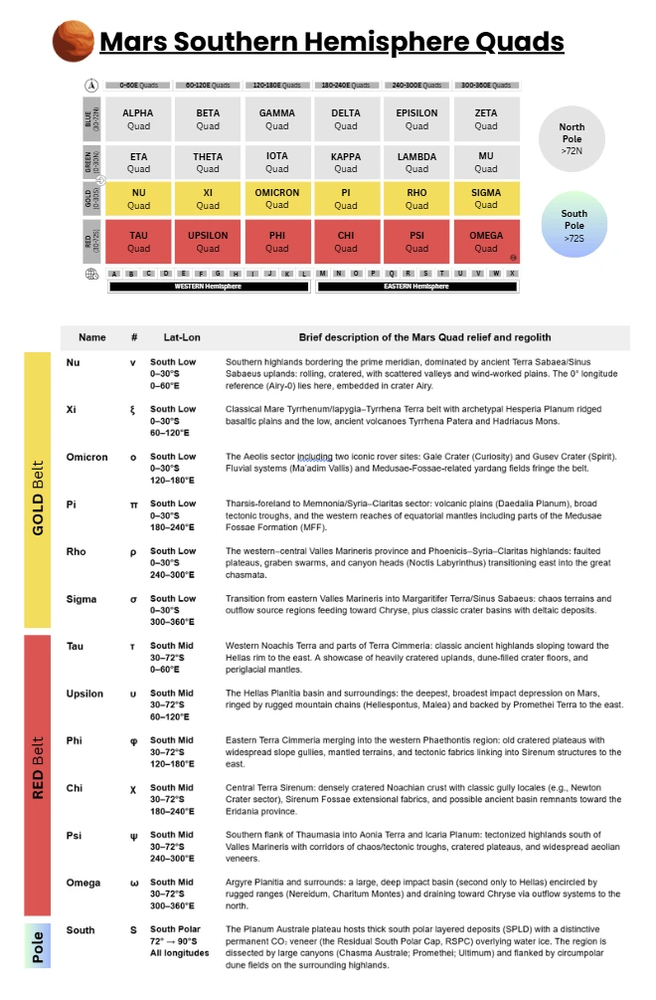
Gold Belt Quads — South Low Belt (0–30°S)
Geologic diversity. This latitude band spans Noachian highlands, Hesperian ridged plains, Amazonian lavas, and mega-canyon systems—often within a single quad.
Dust & yardangs. Equatorial deposits of the Medusae Fossae Formation are among the largest single sources of martian dust, sculpted into vast yardang fields.
Iconic science sites. Gale (sedimentary mountain and lake history), Gusev (basaltic plains + altered hills), Valles Marineris (layered canyon stratigraphy), and Margaritifer basins (deltas/aqueous deposits).
⬛ Nu (ν) (0–30°S, 0–60°E)
Summary profile. Southern highlands bordering the prime meridian, dominated by ancient Terra Sabaea/Sinus Sabaeus uplands: rolling, cratered, with scattered valleys and wind-worked plains. The 0° longitude reference (Airy-0) lies here, embedded in crater Airy.
- Surface & geology. Heavily cratered Noachian crust with local channels and inter-crater plains; classic example craters include Dawes (~9°S, 38°E), whose walls and floor show dunes, valley cuts, and interior pits. Upland materials grade eastward toward Hesperian ridged plains; patchy mantles of dust/sand produce yardangs and bright/dark streaking.
- Elevation & relief. Highlands stand hundreds to a few thousand meters above the martian datum with subdued local relief compared to canyon provinces farther west; MOLA data depict broad dome-like highs broken by old basins.
- Atmosphere, weather & light. Frequent dust hazes; katabatic breezes over crater rims; sharp day–night thermal swings typical of low latitudes. Dust loading modulates sky brightness and reduces horizon contrast on many sols. (Generalized from low-latitude studies.)
- Notable places. Airy-0 (the martian “Greenwich”), Dawes Crater and adjacent valleys.
⬛ Xi (ξ) (0–30°S, 60–120°E)
Summary profile. Classical Mare Tyrrhenum/Iapygia–Tyrrhena Terra belt with archetypal Hesperia Planum ridged basaltic plains and the low, ancient volcanoes Tyrrhena Patera and Hadriacus Mons.
- Surface & geology. Hesperia Planum (type area for the Hesperian Period) shows broad lava plains with wrinkle ridges; plains are interpreted as flood basalts, a key planetary stratigraphic marker. Tyrrhena Patera (~20–22°S, ~106–108°E) and Hadriacus Mons (~31°S, ~92°E) are eroded, low-relief shield/patera edifices with radial channels and gullied flanks, recording volcano–water/ice interactions (e.g., Dao Vallis source).
- Elevation & relief. Moderate-to-high standing uplands with plains benches and apron-like volcanic constructs; kilometer-scale relief over regional swells.
- Atmosphere, weather & light. Often clearer than canyon provinces; dust mantles and local devil tracks appear seasonally along ridged plains and volcano flanks.
- Notable places. Hesperia Planum, Tyrrhena Patera, Hadriacus Mons.
⬛ Omicron (ο) (0–30°S, 120–180°E)
Summary profile. The Aeolis sector including two iconic rover sites: Gale Crater (Curiosity) and Gusev Crater (Spirit). Fluvial systems (Ma’adim Vallis) and Medusae-Fossae-related yardang fields fringe the belt.
- Surface & geology. Gale Crater (5.4°S, 137.8°E) hosts Aeolis Mons/Mount Sharp, a ~5.5-km-tall stratified mound archiving billions of years of climate and sedimentation. Gusev Crater (14.6°S, 175.4°E) receives Ma’adim Vallis; Spirit found mainly basaltic plains, with aqueously altered materials in Columbia Hills. Ma’adim Vallis head and trunk span the southern highlands toward Gusev, an outflow channel marking catastrophic releases.
- Elevation & relief. Transitional—highland crater rims and mesas about lower, smoother plains; interior mounds (Gale) amplify local relief to multi-kilometer scale.
- Atmosphere, weather & light. Regular dust devils and track fields documented (especially Gusev); variable haze affects insolation and visibility near yardang provinces.
- Notable places. Gale/Aeolis Mons, Gusev, Ma’adim Vallis.
⬛ Pi (π) (0–30°S, 180–240°E)
Summary profile. Tharsis-foreland to Memnonia/Syria–Claritas sector: volcanic plains (Daedalia Planum), broad tectonic troughs, and the western reaches of equatorial mantles including parts of the Medusae Fossae Formation (MFF).
- Surface & geology. Daedalia Planum south of Arsia Mons is a lava-flooded plain with overlapping flow fields and low cones; surfaces range from Amazonian to Hesperian in age. The Medusae Fossae Formation—a huge, friable, equatorial deposit with yardangs—likely volcanic/pyroclastic and a major martian dust source. Nearby outflow channels (e.g., Mangala Valles) incise and crosscut plains, linking tectonics to catastrophic floods.
- Elevation & relief. Gently sloping volcanic aprons with local tectonic scarps and fossae; kilometer-scale plateaus step down toward the equator.
- Atmosphere, weather & light. Frequent dust lifting over MFF and dark lavas; thin, wind-sculpted landforms testify to persistent eolian activity and reduced surface contrast during dusty episodes.
- Notable places. Daedalia Planum, Medusae Fossae (Lucus/Gordii Dorsum reaches), Mangala Valles.
⬛ Rho (ρ) (0–30°S, 240–300°E)
Summary profile. The western–central Valles Marineris province and Phoenicis–Syria–Claritas highlands: faulted plateaus, graben swarms, and canyon heads (Noctis Labyrinthus) transitioning east into the great chasmata.
- Surface & geology. Noctis Labyrinthus (~6–8°S, ~260–265°E): maze-like graben and subsidence blocks with diverse hydrated minerals, sitting at the canyon system’s western gateway. Eastern Rho merges into Ophir, Candor, and Melas Chasmata—steep-walled troughs with layered deposits, mass-wasting fans, and interior mounds.
- Elevation & relief. Among Mars’s greatest relief contrasts: plateau tops vs. canyon floors differ by several kilometers, with cliffed walls and stair-stepped benches.
- Atmosphere, weather & light. Topographic channeling drives canyon winds and dust lifting; frequent hazes reduce direct light and accentuate warm-hued sky scattering.
- Notable places. Noctis Labyrinthus, west/central Valles Marineris segments (Ophir–Candor–Melas).
⬛ Sigma (σ) (0–30°S, 300–360°E)
Summary profile. Transition from eastern Valles Marineris into Margaritifer Terra/Sinus Sabaeus: chaos terrains and outflow source regions feeding toward Chryse, plus classic crater basins with deltaic deposits.
- Surface & geology. Iani Chaos (~2°S, ~342°E): fractured, subsided blocks thought to form by removal of subsurface volatiles; headwaters to Ares Vallis. Holden Crater (~26°S, ~326°E) and Eberswalde Crater (~24°S, ~326–327°E) preserve layered sediments; Eberswalde contains a textbook fan delta. Eastern Valles Marineris termini (Coprates/Capri/Eos) grade to chaotic basins and outflow channels.
- Elevation & relief. From chasma floors up to highland rims; deltas sit on crater floors hundreds to thousands of meters below surrounding uplands.
- Atmosphere, weather & light. Dust-laden breezes through chaos/outflow corridors; variable visibility and strong horizon color during dusty seasons. Stratified walls accentuate long, raking light near sunrise/sunset.
- Notable places. Iani Chaos, Holden (ULM system) and Eberswalde deltas, eastern Valles Marineris mouths.
The Quads — South Mid Latitudes (30°S–72°S)
Relief framework. The belt mixes highland plateaus (Noachis, Sirenum, Aonia) with giant basins (Hellas, Argyre). Basins create pressure bowls that influence local weather and sediment routing.
Climate tendency. Mars’ orbital eccentricity places southern summer near perihelion: summers are shorter and dustier; winters are longer/colder with widespread CO₂ frosts.
Common surface processes. Aeolian: dune fields in many crater floors; yardangs in weakly indurated deposits; dust mantles wax and wane with storms. Periglacial: mantles, polygonal ground, lobate debris aprons, and lineated valley fill—evidence for ground-ice-assisted creep. Mass wasting: landslides and gully activity on steep crater and basin rims.
Lighting & visibility. Haze and dust frequently mute contrasts; in basins (Hellas/Argyre) dust surges can dim midday almost to twilight, while clear spells yield stark, high-relief vistas.
⬛ Tau (τ) (30–72°S, 0–60°E)
Profile. Western Noachis Terra and parts of Terra Cimmeria: classic ancient highlands sloping toward the Hellas rim to the east. A showcase of heavily cratered uplands, dune-filled crater floors, and periglacial mantles.
- Relief & elevation. Broad upland plateaus ~1–3 km above the areoid with kilometer-scale crater rims and intercrater benches; local relief subdued compared with canyon provinces but extensive in area.
- Geology & landforms. Crater fields with lobate ejecta, pedestal craters, and interior landslides. Dune basins (e.g., Kaiser, Rabe) with extensive barchan/transverse dunes; dark sands sourced from basaltic units. Mantling deposits and polygonal ground indicative of ice-rich regolith at mid–high southern latitudes.
- Surface texture. Mix of dust-mantled intercrater plains, yardang patches in weakly indurated layers, and dark dune seas in crater floors.
- Temperature & “weather” feel. Large diurnal swings; frequent seasonal CO₂ frost on pole-facing slopes; dust hazes common but vary sol-to-sol.
- Distinctives. Abundance of classic dune-filled craters in a highland setting; western approach to the Hellas rim system begins along Tau’s eastern longitudes.
⬛ Upsilon (υ) (30–72°S, 60–120°E)
Profile. The Hellas Planitia basin and surroundings: the deepest, broadest impact depression on Mars, ringed by rugged mountain chains (Hellespontus, Malea) and backed by Promethei Terra to the east.
- Relief & elevation. Hellas floor drops to roughly −7 to −8 km relative to the datum; rim systems rise several kilometers above adjacent plains—among Mars’ strongest pressure/altitude contrasts over regional scales.
- Geology & landforms. Multi-ring basin architecture with interior plains, wrinkle ridges, and dust/sand mantles. Alluvial fans, gullies, and mass-wasting aprons along steep rim slopes; abundant aeolian bedforms on the basin floor. Glacial/periglacial signatures on the southern/eastern flanks (mantled terrains, lineated valley fills).
- Surface texture. Smooth to gently undulating basin plains with patchy dark sand sheets; rough, blocky rim uplands with talus and scarps.
- Temperature & “weather” feel. Hellas’ higher ambient pressure and depth moderate extremes slightly; strong dust-storm activity can reduce daylight dramatically; nights often warmer during dusty spells due to IR back-radiation.
- Distinctives. The pressure bowl of Hellas is unique, with climate and sediment systems strongly organized by the basin topography.
⬛ Phi (φ) (30–72°S, 120–180°E)
Profile. Eastern Terra Cimmeria merging into the western Phaethontis region: old cratered plateaus with widespread slope gullies, mantled terrains, and tectonic fabrics linking into Sirenum structures to the east.
- Relief & elevation. Highlands ~1–3 km above datum with dissected crater fields; local escarpments and mesas give kilometer-scale relief.
- Geology & landforms. Gully-rich slopes on mid-latitude crater walls (arcuate alcoves, incised channels, apron deposits). Lineated valley fill and lobate debris aprons consistent with ice-assisted creep. Faults/graben trending NW–SE in places, tying into broader Tharsis-related stresses.
- Surface texture. Dust-mantled intercrater plains, rubble-covered slopes, and small dark-sand patches in basin lows.
- Temperature & “weather” feel. Strong day–night thermal range; seasonal CO₂ frosting; frequent dust-devil tracks on smoother plains after storm seasons.
- Distinctives. One of the canonical gully belts of Mars—dense examples on equator-facing and pole-facing crater walls across this longitude span.
⬛ Chi (χ) (30–72°S, 180–240°E)
Profile. Central Terra Sirenum: densely cratered Noachian crust with classic gully locales (e.g., Newton Crater sector), Sirenum Fossae extensional fabrics, and possible ancient basin remnants toward the Eridania province.
- Relief & elevation. Plateau highs with broad uplands and deep craters; typical surfaces ~1–2+ km above the datum, stepping down toward older basin lows.
- Geology & landforms. Newton Crater region: textbook gully systems, dune fields on floors, and mass-wasting scarps. Sirenum Fossae: long, narrow graben reflecting crustal extension. Eridania-margin terrain (north/east edge of quad): subdued basins and layered remnants interpreted as ancient, volatile-rich deposits.
- Surface texture. Mixtures of smooth mantles, blocky ejecta aprons, and dark-sand sheets; polygonal ground common on gentle slopes.
- Temperature & “weather” feel. Mid-latitude southern regime: pronounced seasonality (short, warm southern summers; long, cold winters) with dust activity peaking around perihelion seasons.
- Distinctives. High concentration of slope gullies and tectonic lineations in a single quadrangle, useful for comparative geomorphology.
⬛ Psi (ψ) (30–72°S, 240–300°E)
Profile. Southern flank of Thaumasia into Aonia Terra and Icaria Planum: tectonized highlands south of Valles Marineris with corridors of chaos/tectonic troughs, cratered plateaus, and widespread aeolian veneers.
- Relief & elevation. Uplands grading from the elevated Thaumasia rise to lower plateaus; canyon-adjacent scarps and benches introduce multi-kilometer local relief.
- Geology & landforms. Fractured plateaus with graben and pit chains radiating from Tharsis stresses. Chaos and channel heads along the southern Valles Marineris periphery, transitioning to highland basins. Crater interiors with layered deposits and dune fields.
- Surface texture. Rockier erosional benches near troughs; dust/sand mantles and megaripples across plains; yardangs in weakly indurated units.
- Temperature & “weather” feel. Topographic channeling yields gusty afternoons; frequent dust hazes reduce contrast. Southern-summer perihelion boosts dust-storm probability.
- Distinctives. A meeting ground of Tharsis-related tectonics, canyon-margin processes, and classic highland crater geomorphology.
⬛ Omega (ω) (30–72°S, 300–360°E)
Profile. Argyre Planitia and surrounds: a large, deep impact basin (second only to Hellas) encircled by rugged ranges (Nereidum, Charitum Montes) and draining toward Chryse via outflow systems to the north.
- Relief & elevation. Argyre floor sits ~−5 to −6 km below the datum; encircling mountains rise several kilometers above the plains—steep rims, deep basins, and broad interior plains create dramatic relief.
- Geology & landforms. Multi-ring basin architecture with interior plains, wrinkle ridges, and lobate deposits. Alluvial fans, gullies, and mass-wasting along the mountainous rim; periglacial mantles common at these latitudes. Nearby craters (e.g., Proctor, Galle) host extensive dune fields and layered intracrater deposits.
- Surface texture. Smooth, low-albedo plains on the basin floor; blocky, talus-rich highlands around the rim; prominent dark-sand seas inside larger craters.
- Temperature & “weather” feel. As with Hellas, the basin geometry affects local winds and pressure; dust activity can swing lighting from crisp to sepia-hazy over days. Winter brings recurring CO₂ frost on pole-facing slopes.
- Distinctives. The “paired-basin” counterpart to Hellas: smaller and shallower, but equally instructive for basin-scale climate and sediment circulation at southern mid-latitudes.
The Quads — Polar Caps (North & South)
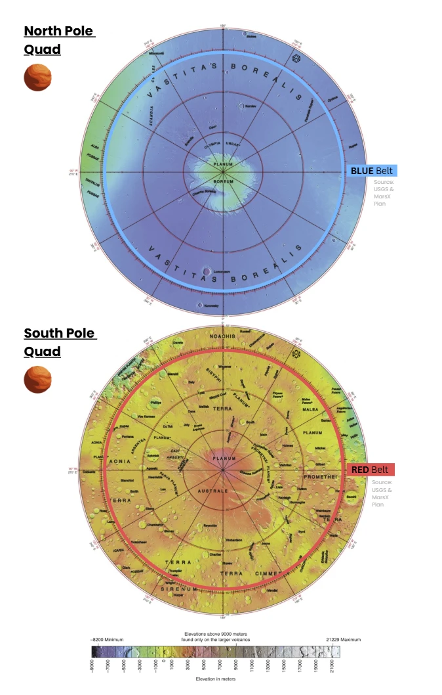
Shared polar themes (both caps)
Layered climate archives. Millennia-to-Myr layering encodes obliquity-driven climate cycles; SHARAD/MARSIS radar stratigraphy shows largely water-ice stacks with dust bands.
Seasonal caps. Each winter, a seasonal CO₂ cap (~1 m scale) condenses and sublimes in spring; its mass exchange drives ~25–30% swings in global surface pressure and produces striking defrost patterns.
Winds & troughs. Katabatic winds, twisted by Coriolis, are implicated in the formation of spiral troughs and the maintenance of cap asymmetries.
Dunes & dust. Circumpolar ergs (notably Olympia Undae in the north) testify to sustained aeolian transport; dust mantles and polar hoods strongly control insolation at the ground.
⚫ North Polar (N) — Planum Boreum & surroundings
Profile. A circular polar plateau (Planum Boreum) ~1,000–1,200 km across, underlain by north polar layered deposits (NPLD) of water ice and dust. The cap is incised by spiral troughs and the canyon Chasma Boreale, and it is partly encircled by the vast dune sea Olympia Undae. The plateau sits within the northern lowlands (Vastitas Borealis).
- Relief & elevation (context). The surrounding northern lowlands lie near ~−5 km (areoid). The polar plateau rises a few km above those plains; typical cap-surface elevations are ~−3 to −2 km. Local relief of trough walls/cliffs commonly reaches hundreds of meters to ~2 km in Chasma Boreale.
- Stratigraphy & composition.The NPLD are ~2 km thick in places and are overwhelmingly water ice with only minor dust (≲ a few percent), stacked as thousands of thin layers that archive climate cycles. A thin seasonal CO₂ frost veneer (order ~1 m at high latitudes) forms each winter and sublimates in spring.
- Landforms. Spiral troughs (katabatic-wind–shaped; Coriolis-twisted) and the ~500 km-long, ~2 km-deep Chasma Boreale nearly bisect the cap. Dune seas (notably Olympia Undae, ~470,000 km²) ring parts of the plateau.
- Surface texture. Bright, smooth ice interleaved with dark, dusty trough walls; steep scarps exposing layered strata; ergs of dark basaltic sand (megaripples, barchans) along the cap margin.
- Atmosphere, light & “weather”. Polar hood: seasonal water-ice cloud deck forms and dissipates around cap edges; spring defrosting drives strong thermal contrasts and dust lifting. During dusty periods, direct sunlight drops and blue-tinged scattering near the Sun becomes pronounced at low solar elevations.
- Numbers at a glance. NPLD thickness to ~2 km; residual summer cap ~1,000 km in diameter. Olympia Undae ≈ 470,000 km²; Chasma Boreale ~500 km × 2 km deep. Total north polar water-ice volume estimated at ~1.2–1.7 million km³.
⚫ South Polar (S) — Planum Australe & surroundings
Profile. The Planum Australe plateau hosts thick south polar layered deposits (SPLD) with a distinctive permanent CO₂ veneer (the Residual South Polar Cap, RSPC) overlying water ice. The region is dissected by large canyons (Chasma Australe; Promethei; Ultimum) and flanked by circumpolar dune fields on the surrounding highlands. Wikipediamarsed.asu.edu
- Relief & elevation (context). The south polar dome is ~3 km above adjacent terrain and is offset from the geographic pole by a few hundred km; the plateau itself stands several km above the areoid on the southern highlands. Basin–rim contrasts yield dramatic slopes and scarps.
- Stratigraphy & composition. SPLD thickness reaches ~3–3.5 km; the RSPC is a thin (≈ 8–10 m) CO₂ ice layer draped atop water-ice deposits. Radar has revealed massive, buried CO₂ ice bodies within the south cap (kilometer-scale sequences) in addition to the dominant water ice.
- Landforms. Chasma Australe (order ~500 km long) and companion canyons incise the SPLD; spiral troughs are present as in the north. The periphery hosts extensive dune belts (less continuous than Olympia Undae), and some crater basins (e.g., McMurdo) display complex intracap stratigraphy. “Cryptic terrain” often emerges during spring defrost.
- Surface texture. Bright layered ice, steep scarp exposures, dark dust-lag patches and seasonal slab-ice patterns; surrounding highlands exhibit yardangs and dune fields aligned with katabatic-wind corridors.
- Atmosphere, light & “weather.” Seasonal CO₂ snowfall/frost expands equatorward to ~60°S at winter peak; spring sublimation triggers jet-like “spider” activity through translucent slab ice, entraining dark sand. Polar hoods and dust hazes modulate lighting from crisp, high-contrast scenes to sepia, diffuse illumination.
- Numbers at a glance. SPLD thickness ~3–3.5 km; RSPC ~8–10 m CO₂; south polar ice + layered deposits volume ~1.6 million km³ (water ice). Major canyons ~500 km long; dome apex offset ~150–250 km from the pole.
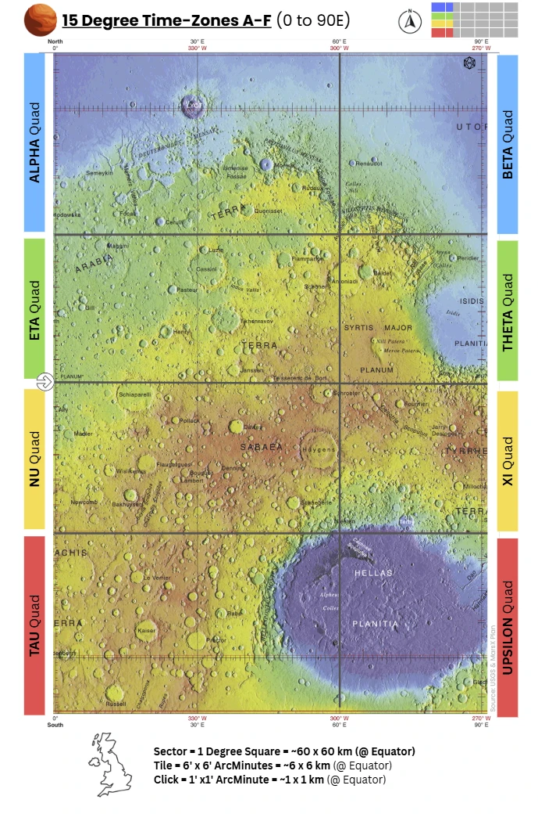
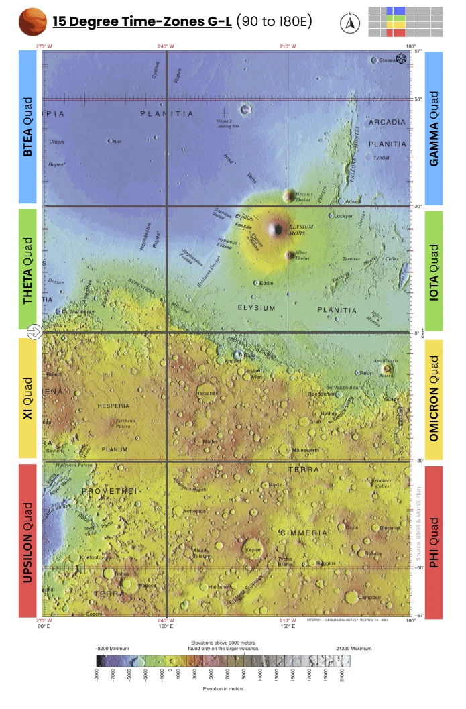
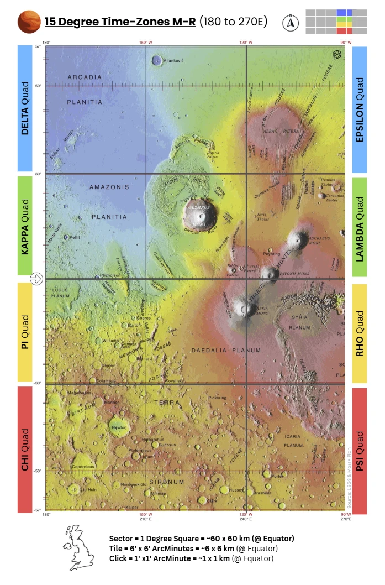
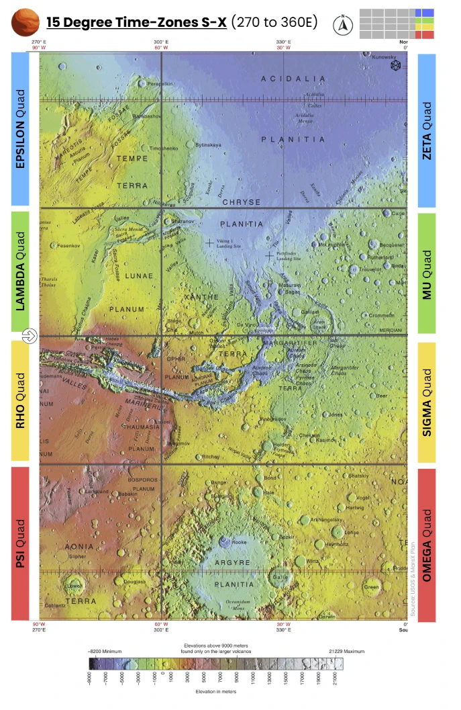
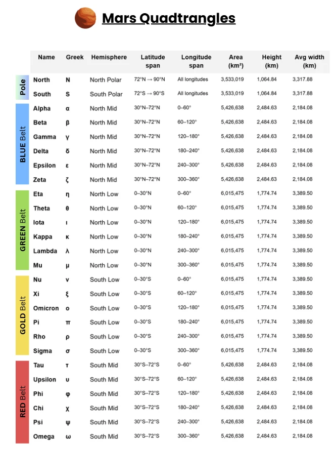
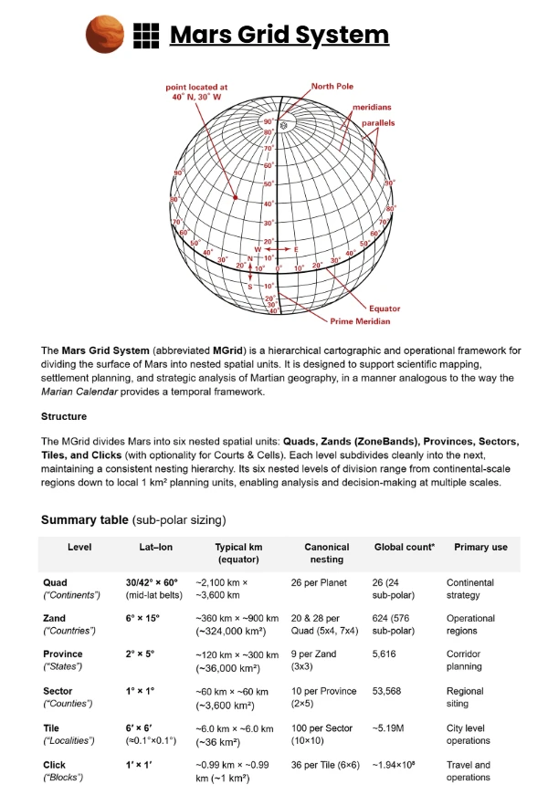